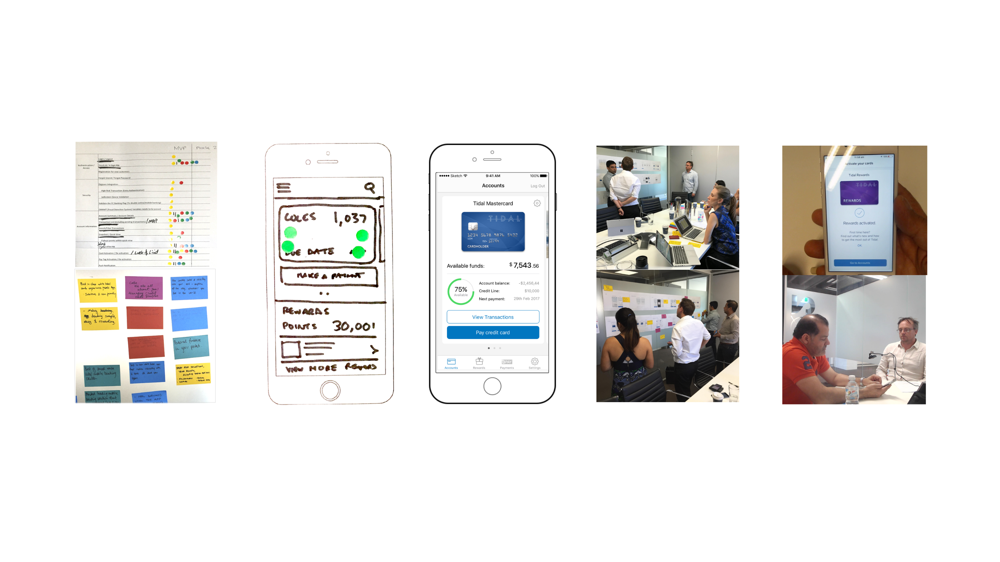
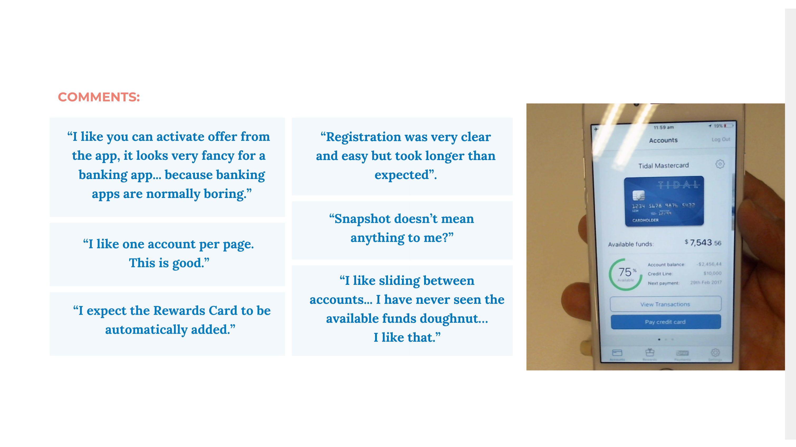
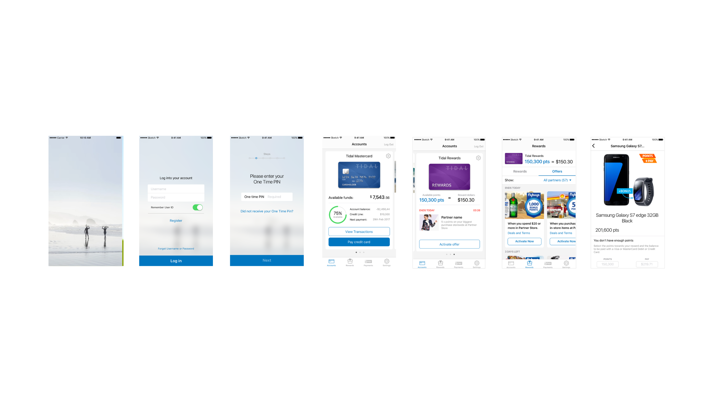

2022 · Banca digital · Australia · Innomad
Citibank
Citibank Australia necesitaba una app bancaria que hiciera visible el valor de su asociación con Flybuys, el programa de puntos más usado del país. Con más de 9 millones de miembros y el 70% de los australianos participando, Flybuys era parte de la rutina diaria de compra. El proyecto abarcó desde el discovery con el equipo del cliente hasta el lanzamiento de la integración.
Rol
Product Designer
Agencia
Innomad
Año
2022
Mercado
Australia
Discovery y alineación
El primer paso no fue abrir Figma. Fue entender qué quería construir el equipo de Citibank antes de diseñar nada.
Facilitamos un workshop con el equipo del cliente para llegar a un acuerdo sobre qué problema resolvía la app. Al final del primer día, el equipo de Citibank había escrito su propio App Definition Statement: "To create a simple, easy and rewarding cards experience, that puts you in control of your finances." Eso marcó el tono de todo lo que vino después.
Que el cliente escriba su propio App Definition Statement es un ejercicio de alineación real elemental para empezar a trabajar.

Workshop de dos días con el equipo de Citibank. Día 1: alineación sobre el problema y priorización de objetivos. Día 2: validación y escritura del App Definition Statement.
Las decisiones de diseño
Con los objetivos claros, el trabajo de diseño se centró en un problema concreto: cómo hacer que el usuario entendiera lo que tenía y pudiera usarlo.
El reto de la integración era de comprensión, no de visibilidad. Un usuario con puntos acumulados que no sabe cómo usarlos no percibe ningún valor en el programa. Diseñamos el flujo para que el cliente pudiera ver sus puntos, entender qué puede canjear y acceder a ese canje en los momentos naturales de la app: cuando consulta su saldo, cuando revisa sus transacciones, cuando activa la tarjeta. La lógica era clara: si conseguíamos que el usuario entendiera Flybuys, integrar los puntos Citi después sería el paso natural. La paridad 1:1 entre ambos lo hacía posible.
Tensión resuelta
Flybuys integrado en el flujo sin competir con las tareas bancarias principales.
Confianza en el dinero
Los puntos Flybuys no son dinero bancario. El usuario tenía que entender que podía gastarlos sin tocar su cuenta, y que podía combinarlos con su propio dinero para completar una compra.

Resultados del user testing con el prototipo funcional. Un participante resumió exactamente lo que buscábamos: "parece muy elegante para una app bancaria, las apps bancarias normalmente son aburridas".
Colaboración con el equipo técnico
El scope cubría seis epics: onboarding, seguridad, cuentas, ajustes, pagos y rewards.
Una de las decisiones clave del proyecto fue integrar al equipo de desarrollo desde el principio, no al final. Los desarrolladores no recibieron los diseños cerrados para ejecutar: participaron desde las primeras fases para establecer acuerdos y trabajar en una dirección común. Con Kotlin para Android, Swift para iOS y CI/CD activo desde el principio, diseño y desarrollo avanzaron en paralelo sobre lo que ya se había definido en el workshop. El timeline fue de marzo a octubre: diseño, desarrollo, testing, business readiness, lanzamiento.

El producto final cubría seis flujos: onboarding, autenticación con One Time PIN, cuentas, pagos, rewards Flybuys y catálogo de ofertas.
Lo que aprendí en banca
En banca, el mayor riesgo de diseño no es hacer algo feo. Es hacer algo que no transmita confianza. Los usuarios toleran interfaces anticuadas porque las asocian con estabilidad. Cambiar eso requiere ser muy preciso con qué tocas y en qué orden.
Trabajar en banca enseña que la cultura corporativa marca el ritmo de las decisiones. Hay que ser paciente sin perder la dirección. Y al otro lado de esa burocracia están usuarios que quieren lo mismo que en cualquier otro producto: poder usar lo que tienen de la mejor manera posible.